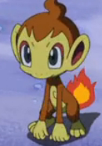
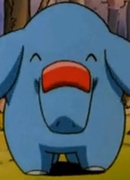
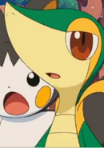

|
Absol |
- Pokemon Advanced Generations
- Pokemon Movie 6: Jirachi Wish Maker
|
Absol is a Pokemon that was introducted in 3rd Generation. This Pokemon can sense and predict when a disaster will happen. Absol tries to warn people about the disaster, but people blamed Absol for the disaster. |
 |
Bulbasaur |
- Pokemon
- Pokemon Movie 1: The First Movie
- Pokemon: Pikachu's Summer Vacation
- Pokemon Movie 2: The Power of One
- Pokemon: Pikachu's Rescue Adventure
- Pokemon: Mewtwo Returns
- Pokemom Movie 3: Spell of the Unknown
- Pokemon Chronicles
- Pokemon: Pikachu and Pichu
- Pokemon: Pikachu's Winter Vacation 2000
- Pokemon: Pikachu's Pikaboo
- Pokemon: Pikachu's Winter Vacation 2001
- Pokemon Advanced Generations
|
Bulbasaur is a Pokemon from the Kanto region. Bulbasaur is a starter Pokemon that a trainer can choose in Kanto. Bulbasaur are loyal to their trainers. It uses its vines to pick up young Pokemon. Megumi Hayasibara voices Ash's Bulbasaur. |
|  |
Chimchar |
- Pokemon Diamond and Pearl
- Pokemon Movie 10: The Rise of Darkrai
- Pokemon Movie 11: Giratina and The Sky Warrior
|
 |
Dratini |
|
 |
Eevee |
- Pokemon Advanced Generations
|
Eevee is a Pokemon from Kanto region. Eevee is a quadruped creature with primarily brown fur. Eevee has an irregularly shaped genetic structure that allows it to adapt to many different kinds of environments. Megumi Hayasibara voiced May's Eevee. |
 |
Espeon |
- Pokemon Advanced Generation
|
Espeon is a Pokemon from Johto region. Espeon is one of the Eevee evolve forms. The gem on Espeon's head boosts it's psychic powers to protects it's trainers. Megumi Hayasibara voices Anabel's Espeon. |
 |
Fennekin |
- Pokemon XY
- Pokemon Movie 17: Diancie and the Cocoon of Destruction
|
 |
Florges |
|
 |
Gardevoir |
- Pokemon Diamond and Pearl
- Pokemon Black and White: Adventure in Unova
|
 |
Glaceon |
- Pokemon Diamond and Pearl
|
Glaceon is a Pokemon from the Sinnoh region. Glaceon is one of the final forms of Eevee. This Pokemon is able to create small ice crystals around it by controlling its body temperature. This person voices May's Glaceon. |
 |
Jolteon |
- Pokemon: Eevees and Friends
|
Jolteon is a Pokemon from the Kanto region. Jolteon is one of the Eevee forms. Jolteon's fur amplifies the elecrical charges produced by its cells. It can store and generate negative ions in it fur. |
 |
Latias |
- Pokemon Movie 5: Heroes - Latias and Latios
|
 |
Lugia |
|
| |
Oshawott |
|
|  |
Phanpy |
- Pokemon
- Pokemon: Camp Pikachu
- Pokemon Advanced Generations
|
 |
Pidgeot |
|
 |
Pikachu |
- Pokemon Movie: The First Movie
- Pokemon: Mewtwo Returns
|
Pikachu is the main Pokemon in all of Pokemon. Pikachu is from the Kanto region and the evolved form of Pichu. Pikachu can recharge each other with their build up energy. Megumi Hayasibara voiced Mewtwo's Clone Pikachu. |
 |
Roselia |
- Pokemon Advanced Generations
|
 |
Skitty |
- Pokemon Advanced Generations
- Pokemon Movie 7: Destiny Deoxys
|
|  |
Snivy |
- Pokemon Black and White
- Pokemon Movie 15: Kyurem vs. The Sword of Justice
- Pokemon Black and White: Rival Destinies
- Pokemon Black and White: Adventure in Unova
- Pokemon Black and White: Decolora Adventure
|
 |
Squirtle |
|
Squirtle is a Pokemon from the Kanto region. Squirtle is the water type starter that a trainer can choose in the Kanto region. It can spray foamy water from its mouth with great accuracy. Squirtle's shell is powerful tool for its protection. Megumi Hayasibara Voiced Tierno's Squirtle. |